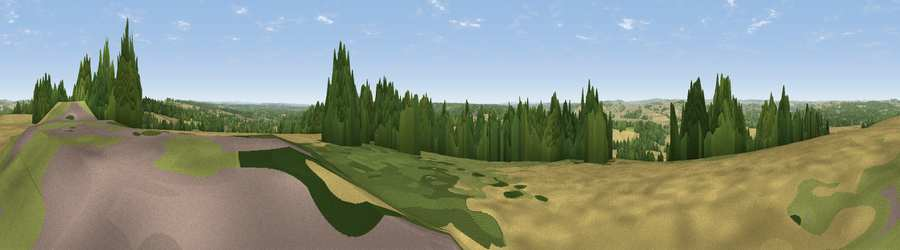

Viewpoint near West Grimstead
#21123 in England · top 15% of its area beats it · near West GrimsteadWhere it is
The exact computed spot (SU 20675 24175). Click the marker for map links.
The view, rendered

A 360° render of this exact spot computed from the terrain model, tree cover and land cover — summer colours, afternoon light, calibrated against photographs of famous viewpoints. Real trees, hedges and buildings will differ in detail.
The panorama
Grey silhouette: terrain skyline in each direction (720 bearings, Earth curvature and refraction included). Dashed green: skyline with trees (+15 m) and buildings (+8 m) as obstacles. Blue strip: how far the ground is visible on each bearing.
Where the view opens
Wedge length = distance to the farthest visible ground on that bearing (vegetation-aware). Rings at 10, 25 and 50 km.
What fills the view
40% cropland · 32% woodland · 27% grassland · 1% built-up
Angular shares of the visible panorama (visual magnitude), not map area. Landscape diversity 0.50 (0–1 Shannon).
Key numbers
More beautiful places nearby
The staircase of upgrades: each row has a higher view potential than everything closer. Driving times are estimates from straight-line distance, calibrated against real road routing — check an actual route before setting out.
| Place | Direction | Drive | Score |
|---|---|---|---|
| Viewpoint near West Grimstead | N · 1 km | ~2 min | 54.6 |
| Viewpoint near Laverstock | NNW · 8 km | ~17 min | 58.0 |
| Cockey Down | NNW · 8 km | ~17 min | 60.3 |
| Kent's Wood | NE · 12 km | ~22 min | 60.9 |
| Hydon Hill | WNW · 17 km | ~30 min | 61.2 |
| Viewpoint near Martin | WSW · 18 km | ~31 min | 64.6 |
| Viewpoint near Cranborne | WSW · 18 km | ~32 min | 65.0 |
| Viewpoint near Bulford | N · 19 km | ~32 min | 70.3 |
51.01658, -1.70663 · source: screening · position refined by local search. Computed location — check access rights before visiting.